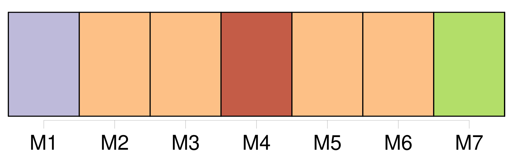
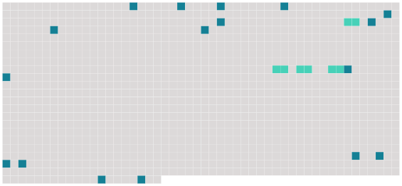

Longueur nb maillons : 21 mentions |
  |
Il dévoilait leurs pensées, leurs intentions, les analysait, les expliquait : « Quand [Médor] a vu que le râle [le] faisait courir ainsi, [il] s'est dit : « Attends, [mon] gaillard, nous allons rire. [1 phrases] Tout est arrivé comme [il] l'avait prévu ; le râle, tout d'un coup, s'est trouvé sur la lisière. [1 phrases] [Il] s'est dit : « Pincé, nom d'un chien!! » et s' [est tapi] [Médor] alors tomba en arrêt en me regardant ; je [lui] fais un signe, il force. [1 phrases] --il tombe ; et [Médor] , en le rapportant, remuait la queue pour me dire : « Est -il joué, ce tour -là, monsieur Hector?? [8 phrases]
[Son piqueur] fut [son garde-malade] , et [cet écuyer] [qui] s'ennuyait au moins autant que [son] maître, dormait jour et nuit dans un fauteuil, pendant que le baron jurait et s'exaspérait entre ses draps. [22 phrases] [Médor] rencontra, [rampa] , s' [arrêta] , [leva] la patte. [5 phrases]
Mme Vilers, éperdue, ferma les yeux, lâcha les deux coups, recula d'un pas sous la secousse du fusil : puis, quand elle reprit son sang-froid, elle aperçut le baron qui dansait comme un fou, et [Médor] rapportant deux perdrix dans [sa] gueule. |
 |
La ressource peut être téléchargée sur la page Ortolang
Si vous avez des questions ou vous voyez des erreurs, merci d'envoyer un mail à silvia.federzoni89@gmail.com
Site développé par S. Federzoni (contact)